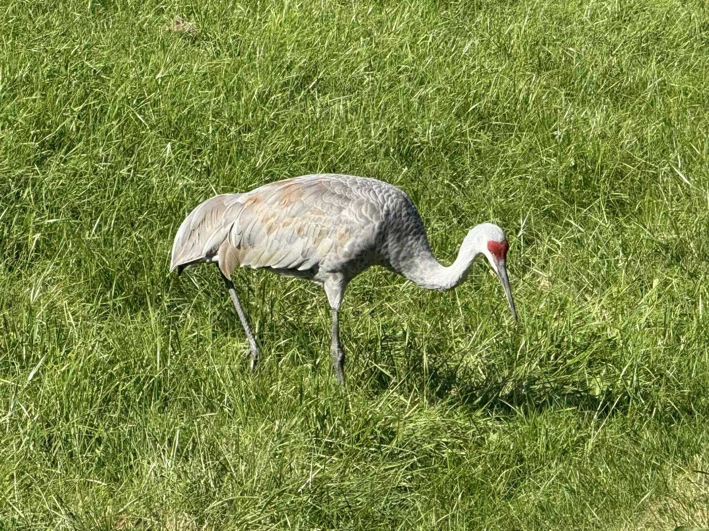

Sandhill Crane
Tall bird of open fields and marsh
Sandhill cranes walk with slow steps and probe the ground for food. Adults have a red crown patch and a long pointed bill.

In spring they make loud calls that carry across the fields.
Sandhill cranes walk with slow steps and probe the ground for food. Adults have a red crown patch and a long pointed bill.

In spring they make loud calls that carry across the fields.